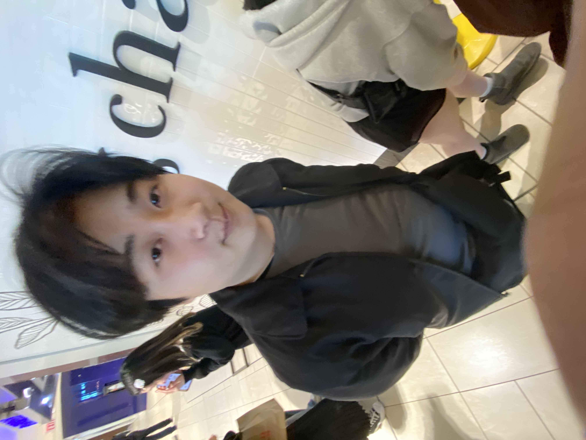

Who am I?
My name is Jason and I have been drawing for as long as I remember and started commissions 4 years ago.
Here is some of my work and processes! Also click to see expanded images!
Artwork Gallery
Fanart of Kafka from Honkai Star Rail - Personal Project
Fanart of Ei from Genshin Impact - Personal Project
Fanart of Dehya from Genshin Impact - Personal Project
Captain Misty Morgan Character Drawing - Art Commission
Original Character Client Drawing - Art Commission
My Biggest Inspiration for Art
WLOP is a phenomenal artist that has inspired me for years on end. I first started following this artist when I was around 15 years old and since then, I have been in awe of every single work they have posted and showcased.
My Artistic Journey
My passion for art ignited when I was in kindergarten, where my drawings were often praised, laying the foundation for my artistic journey.
Four years ago, I delved into the world of digital art, which allowed me to explore new techniques and possibilities in my creative process.
Around the same time, I began taking commissions, turning my passion for art into a profession and sharing my creativity with others.
Through continuous practice and exploration, I've evolved as an artist, constantly pushing boundaries and refining my skills.